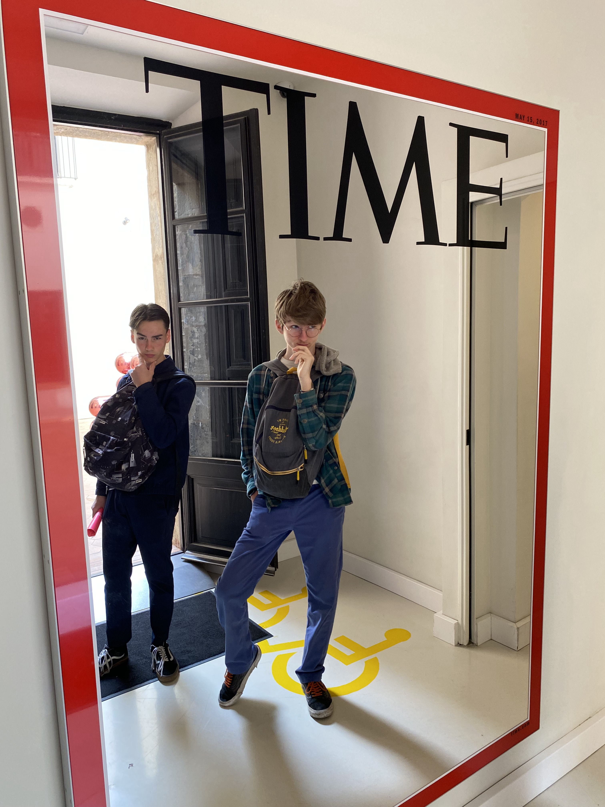

Musée Moco
Description :
Le Moco Museum Barcelona est une extension du célèbre Moco Museum d'Amsterdam, réputé pour son art
contemporain et ses expositions innovantes. Situé dans le quartier d'Eixample à Barcelone, en Espagne, ce musée
offre une expérience artistique unique aux visiteurs.
Le musée présente une variété d'œuvres d'art moderne et contemporain, mettant en vedette des artistes
émergents ainsi que des noms établis dans le monde de l'art. Les expositions sont souvent interactives et engagent
les spectateurs dans un dialogue sur des sujets sociaux, politiques et culturels actuels.
Le Moco Museum Barcelona vise à démocratiser l'art contemporain en le rendant accessible à un public
diversifié. Il organise régulièrement des événements, des ateliers et des conférences pour encourager la
participation du public et stimuler la créativité.
En plus de son engagement envers l'art contemporain, le musée se distingue par son architecture
spectaculaire. Installé dans un bâtiment historique rénové, le Moco Museum Barcelona offre un cadre unique pour
les expositions artistiques, combinant le charme du vieux monde avec la créativité de l'art moderne.
En résumé, le Moco Museum Barcelona est un lieu dynamique où les visiteurs peuvent découvrir et
interagir avec l'art contemporain dans un environnement stimulant et inspirant.
......
On a visité le musée Moco vers la fin du voyage. C'est mon deuxième lieu préféré après le quartier gothique. Je ne comprends pas vraiment l'art contemporain, mais beaucoup d'œuvres là-bas m'ont touché ou impressionné. Beaucoup d'œuvres sont là pour dénoncer les vices de l'humanité et choquer ceux qui les regardent.

